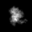
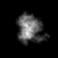

最小
最大
平均値
標準偏差
標準誤差
0
83.9283
6.29888
15.77
0.246406
| オプション | 必須項目/選択項目 | 説明 | デフォルト |
|---|---|---|---|
| -i | 選択 | 入力ファイル設定（ファイルが１つの時に設定） | NULL |
| -I | 選択 | 入力ファイル設定（軸を探すファイルのリストを設定） | NULL |
| -r | 必須 | 参照ファイルを設定（傾斜角度０度のデータを設定） | NULL |
| -o | 必須 | 出力ファイル設定 | NULL |
| -O | 選択 | 出力ファイル設定（傾斜軸のずれを予測した値が入る） | stdout |
| -range | 選択 | 開始角度、終了角度、刻み幅の設定 | thetaMin=-90 thetaMax=+90 thetaDelta=1 |
| -w | 選択 | 相関を取る領域を設定 | 0.5 |
| -M | 選択 | モード （インターポレーションの値の計算方法を選択。現段階では変更の必要なし） |
2 |
| -CM | 選択 | 17 | |
| -h | 選択 | ヘルプを表示 |
| モード | 説明 |
|---|---|
| 0 | 最短距離法 |
| 1 | 線形補間法 |
| 2 | ３次補間法 |
| 3 | 多項式法 |
| モード | 説明 |
|---|---|
| 0 | 正規相関：FxG* |
| 1 | 位相相関：FxG*/|FxG*| |
| 2 | 位相相関：FxG*/sqrt(|FxG*|) |
| 3 | 標準化された正規相関：FxG*/(|F||G|) |
| 16 | (0,0) = 0 |
|  | 最小 |
0 |
|  | 最小 |
0 |
|
最小 |
0 |
 |
最小 |
0 |
 |
最小 |
0 |